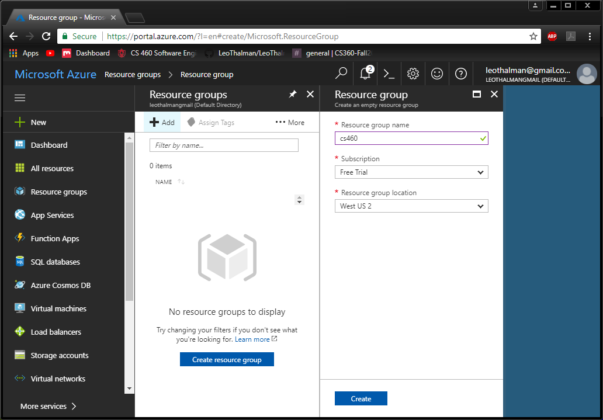
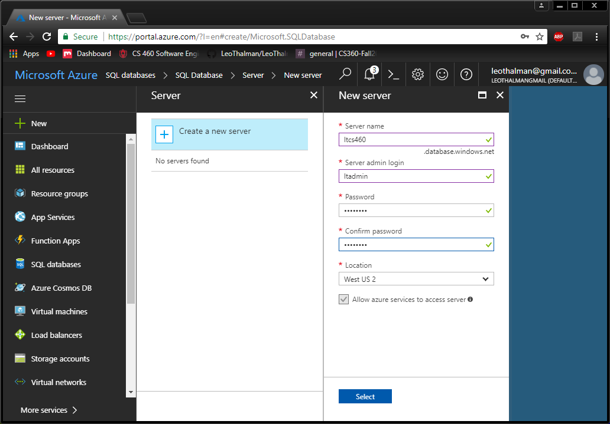
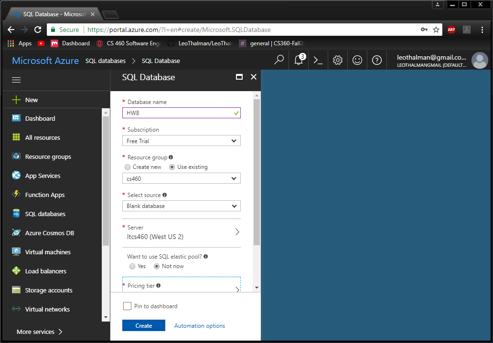
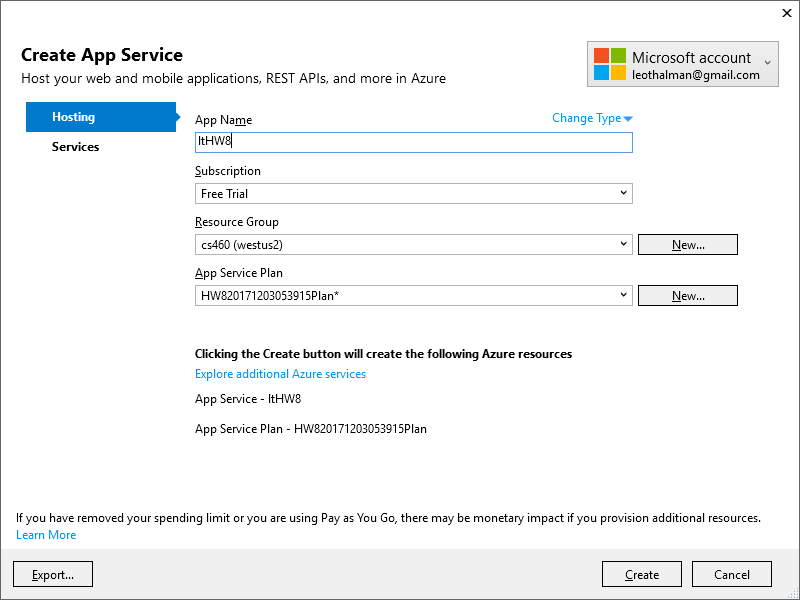
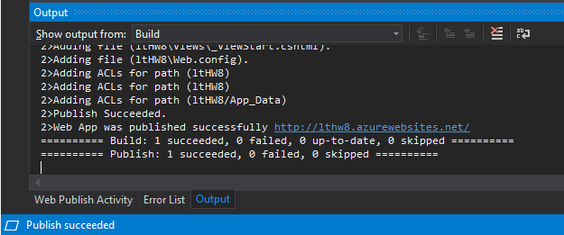

For this assign we had to take our project from homework 8 and deploy it to the cloud. The purpose of this assignment is to get some experience deploying a project to the cloud, as well as set up an account so that we can do so.
The assignment can be found here
Creating the account wasn't hard, I followed the link provided in and signed up for the account then went on to the process of deploying the project. First I had to create a resource group to hold everything. To do that I clicked on the resource group button in the menu on the left and the clicked the add button. doing that brought up the two tabs shown in the image below, I filled out the information and created the resource group.
Once I had the resource group created I could go on to creating the server and the database. I had to create the server first so that I had somewhere to put the database. I found that by going to SQL databases and trying to add one, which presented the add SQL database menu that let me go on to the create server menu.
Once I had that done I went back to the create database menu and added in a new database for HW8, I dropped the pricing tier down to basic because the website doesn't need to be functional for a retail scenario. Once that was deployed I grabbed the connection string from it and replaced the one I had in HW8 so that I could deploy the database to the new one I had just made.
Now that I had the database connected and the tables populated it was time to publish the project. To do this I went under build and clicked on publish. This brought up a menu which asked me what I wanted the publish target to be, I chose Microsoft Azure App Service as thats where we're putting it and the following image is what came up next.
Once that was done it brought up another connecting it brought up another menu saying that azure was configured and and option to publish with a dropdown menu next to it. I clicked the publish button and it began the process of publishing this to azure. After a little bit I got back the okay from visual studio and checked the website to see everything working.
